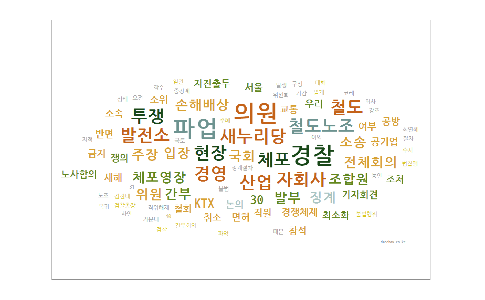

There might be two different texts, which cover same subjects. Danchew helps user to recognize the different viewpoint existing between two texts. By comparing two texts, an user can have more balanced viewpoint in many issues, including social and global issues.
When an user enters two texts in the form and submit, Danchew shows 3 different tag-cloud.
The first tag could represents morphemes existing in the first text article.
The second tag cloud represents morphemes existing in the second text article.
The third tag cloud represents common morphemes - existing in both articles.

Therefore, users can understand overall content and different viewpoint of the first article from the second one.
There was a huge union labor strike in Korea at this time, and we thought that there were differences between liberal press and conservative press in their viewpoints. This was the main initiative to start this project. When we put articles from different press, these word clouds showed us big differences even though they were about the same incident. For example, conservative press used words like 'Congress', 'management','compensation for damages', while liberal press used 'struggle', 'arrested', 'police'. At this time, most conservative parties and press were rebuked for hiding the fact of excessive use of force by the police. This word cloud results clearly show that conservative press was hiding the fact of labor union's struggles by describing things about Congress, management and compensations.